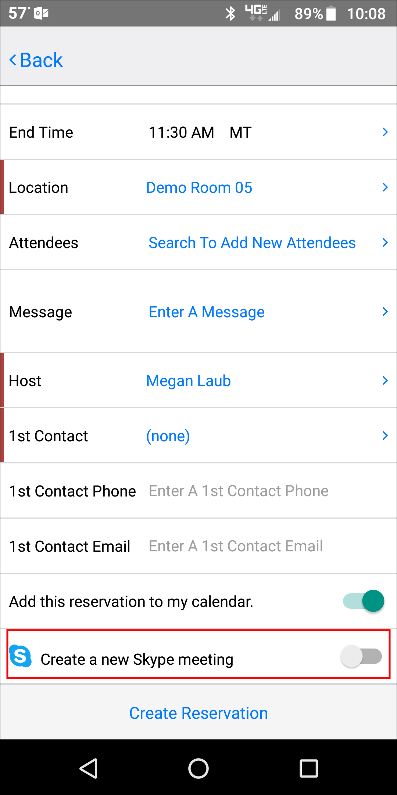
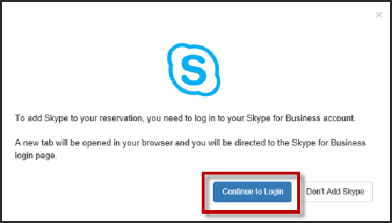
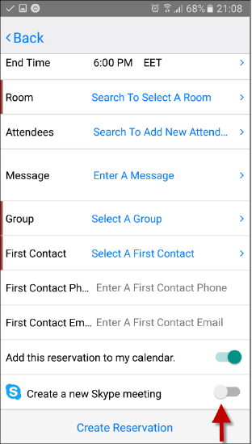
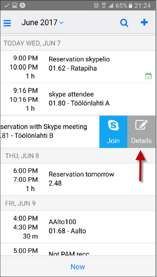
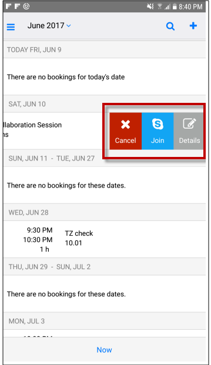

Skype for Business Integration in EMS Mobile App
The EMS integration of Skype for Business in the Mobile App allows users to easily incorporate instant messaging and audio/video conferencing to their meetings without the need for A/V support. Skype for Business Integration is currently available for the EMS Mobile App, EMS Web App, and EMS for Outlook.
When considering using the Skype for Business Integration, keep in mind the following
- Skype for Business Integration is ONLY available on Exchange-enabled templates.
- Users cannot edit or remove Skype for Business meetings from their reservations. Users can delete the link, but the Join link will remain enabled.
For more information about Configuring Skype for Business, see Configure Skype for Business.
This topic provides information about the following:
Add Skype for Business to a Reservation
To add Skype for Business to a reservation in EMS Mobile App:
- Sign in to your EMS Mobile App.
- Create your reservation. Select a room and invite attendees.
-
At the bottom of the screen, there is a Create a New Skype Meeting toggle.

Skype for Business Toggle
- If this is your first time using Skype for Business, an authentication form will appear. Sign in using your Skype credentials.
- If your Skype account is authenticated, you can continue creating your reservation.
- If your Skype account is not authenticated, an authentication modal will appear.
- If you fail to authenticate your Skype account, the Skype toggle will be disabled.

Skype Authentication Form
Authentication to Skype is dependent upon the deployment type. There are three deployment types for Skype for Business:
- On Premise: This deployment for Skype for Business does not retain a token and requires authentication every 8 hours. As a result, you will be asked to sign in every 8 hours.
- Online: This deployment retains the token so only an initial authentication is required.
- Hybrid: This deployment has the same authentication method as the Online deployment.
For more information regarding authentications in Skype for Business, see Skype for Business Deployment Types.
- Following authentication, slide the Create a new Skype Meeting toggle to add Skype for Business to your reservation.

Create a New Skype Meeting Toggle
- After successful authentication, you should receive a message that Skype has been successfully added to your reservation. To remove Skype from your reservation, slide the Create a new Skype Meeting toggle to the disabled position.
- Click Create Reservation. Skype meeting information will appear in your meeting invitation and will be stored on the EMS database.
Once you have added Skype to your reservation, the meeting attendees will receive an email notification including the Join Skype link and call-in information.
- Meeting hosts can view reservation details, including Skype meeting information, by navigating to the Home page. Swipe to the left of the meeting you want to view and click Details.

Select Details to View Skype Meeting Information
Once Skype has been added to your meeting, the Skype meeting information will appear in all EMS applications that have been integrated with Skype for Business (i.e., EMS for Outlook and EMS Web App).
Join a Skype for Business Meeting
To join a Skype for Business meeting in EMS Mobile App:
- From the Home page, navigate to the meeting you want to attend. Swipe left. From this drawer, you will be able to Cancel, Join, and view Details.

Skype Join Meeting Button
- Click Join to be connected to your Skype meeting.
For more information regarding using Skype for Business in other EMS access points, see also:
For more information regarding features of Skype for Business, refer to the Microsoft Skype for Business User Guide.